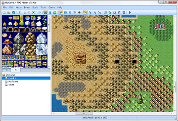
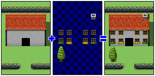

A map is data representing the stage on which the game takes place. The game unfolds primarily on a screen with the player's characters moving over a map.
Maps are created and edited using combinations of map pieces known as tiles.
Tiles give graphical representations to the map you create and allow you to make a number of different settings, such as whether characters can pass through them.
Each map has one group of tiles known as a title set assigned to it, and the titles therein are used to design the map itself. You can also completely change the look of a map by changing the tileset it uses. Title set content is edited using the Database.

Each title set can have five types of tiles labeled A through E. Type A titles are for the lowest layer on the map and are used for representing such things as terrain and ground, while types B through E are for representing upper layer objects such as trees and signs.
Both lower layer and upper layer titles can be placed at the same position on the map. You can use this two-layer structure to expand the range of expression of your maps.
Standard tilesets (those included in the RTP) include lower-layer tiles representing oceans, grasslands, floors, walls and other surfaces, and upper-layer tiles for embellishing them.
Map size is measured in tiles and can range from 17 to 500 tiles horizontally and 13 to 500 tiles vertically.
An area equivalent to 17 × 13 tiles (H × V) can be displayed on the game screen at any time. Maps larger than this will move automatically (scroll) with the player remaining at the center. It is also possible to connect the edges of a map to form a loop to create effects such as going around the world and coming back to your starting point.
Positions on map tiles are represented using map coordinates. The tile at the upper left corner is the origin (0, 0) of a map's coordinates, with the first number representing the number of the tile on the x axis, and the second the number of the tile on the y axis. For example, the map coordinates of the lower right corner on a 500 × 500 tile map would be 499 × 499. The status bar displays the map coordinates of the tile that is currently being edited.
Map coordinates can be used to specify a move destination for the party based on a variable or to monitor a party's current position in an event command.